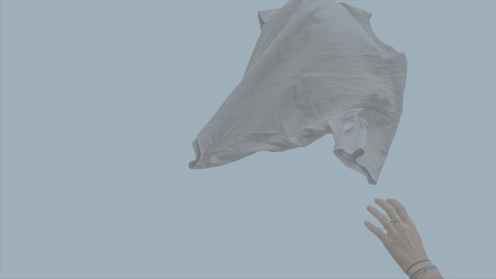

Grundlæggende
UX
I dette tema blev vi introduceret til testmetoderne Survey, solution sketch, interview, crazy-8 og art-museum/heat map. Vi har i dette forløb skulle arbejde med alle testtyper, da vi selv har skulle udvikle en hjemmeside, med den bedste brugeroplevelse som muligt. Jeg var personligt selv meget begejstret for Survey og art-museum, da det for mig gav mest i forhold til user experience.